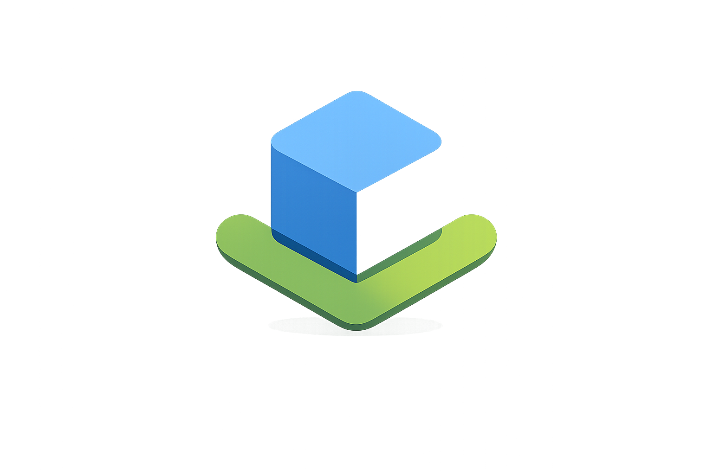
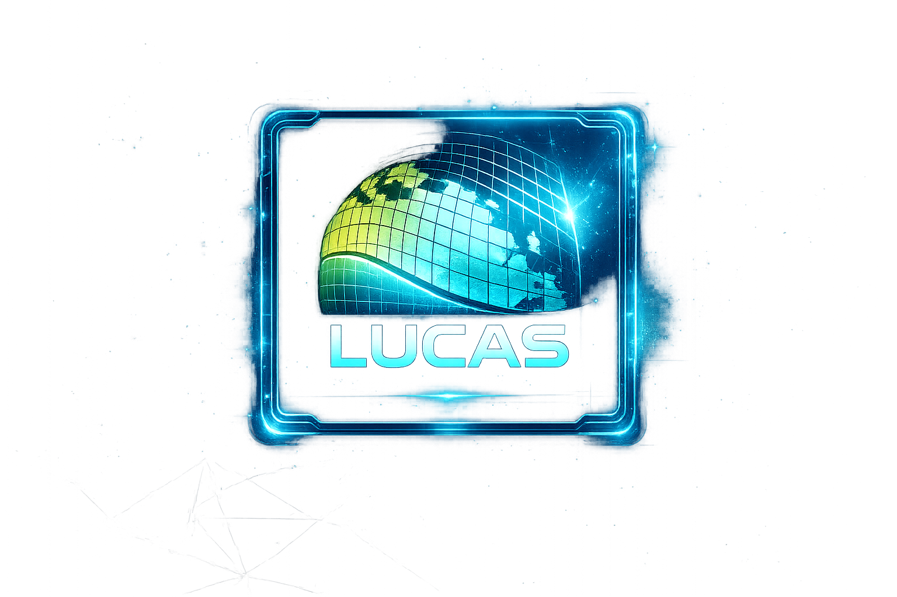
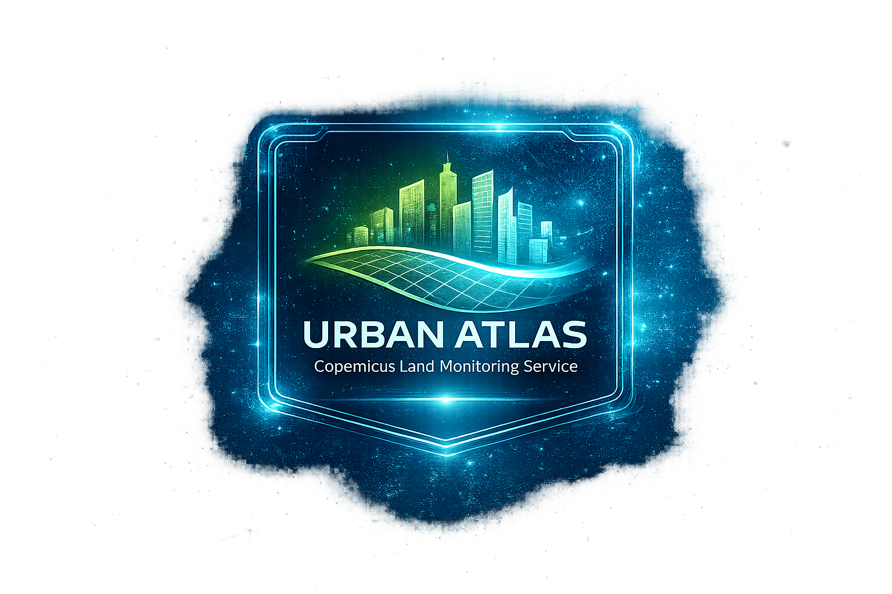
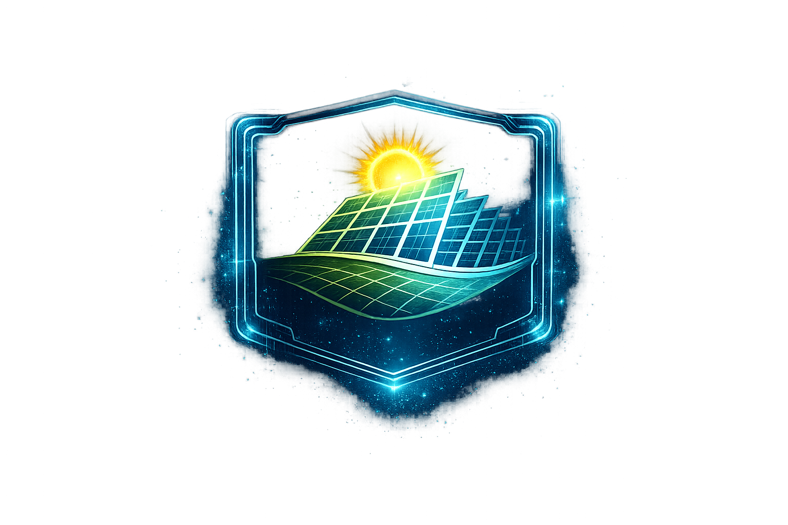

← Πίσω στα Έργα
Γεωχωρικά Έργα
Γεωχωρικά & GIS Έργα
Αναλυτής GIS — Geoapikonisis S.A.P.G.E.
Αθήνα, Ελλάδα
2019 – 2021

Ελληνικό Κτηματολόγιο – Περιφερειακές Ενότητες Φθιώτιδας & Ευρυτανίας
- Επεξεργασία κτηματολογικών χωρικών δεδομένων και υποστήριξη ροών χαρτογράφησης για την καταγραφή αγροτεμαχίων.
- Εκτέλεση εργασιών επικύρωσης γεωχωρικών δεδομένων και ψηφιοποίησης σε βάσεις δεδομένων GIS.
ArcGIS
QGIS
Access DB
Ψηφιοποίηση
Επικύρωση Δεδομένων

Έρευνα LUCAS – Ευρωπαϊκή Επιτροπή
- Συμμετοχή στην έρευνα πλαισίου κάλυψης χρήσης/κάλυψης γης (LUCAS).
- Υποστήριξη ταξινόμησης χρήσης γης και επικύρωσης δεδομένων πεδίου σύμφωνα με ευρωπαϊκά στατιστικά πρότυπα.
ArcGIS
ArcGIS Online
Ταξινόμηση Χρήσης Γης
Επικύρωση Πεδίου

Urban Atlas – Υπηρεσία Παρακολούθησης Γης Copernicus
- Ψηφιοποίηση χρήσης και κάλυψης γης για τη Λειτουργική Αστική Περιοχή (FUA) της Αττικής με χρήση ορθοφωτογραφιών υψηλής ανάλυσης.
- Οριοθέτηση αστικών κλάσεων χρήσης γης σύμφωνα με τις προδιαγραφές Urban Atlas.
- Παραγωγή γεωχωρικών δεδομένων που υποστηρίζουν ευρωπαϊκή αστική παρακολούθηση και χωρικό σχεδιασμό.
ArcGIS
Φωτοερμηνεία
Χαρτογράφηση Κάλυψης Γης
Anaconda
Jupyter

Μελέτη Φωτοερμηνείας για Επιλογή Θέσης Φωτοβολταϊκού Πάρκου
- Εκτέλεση επιλογής θέσης βάσει GIS για εγκαταστάσεις φωτοβολταϊκών πάρκων χρησιμοποιώντας προκαθορισμένα χωρικά κριτήρια.
- Αξιολόγηση υποψήφιων θέσεων μέσω φωτοερμηνείας δορυφορικών εικόνων.
- Ανάλυση χρήσης γης και περιβαλλοντικών περιορισμών για την αξιολόγηση καταλληλότητας θέσης.
QGIS
Επιλογή Θέσης
Δορυφορικές Εικόνες